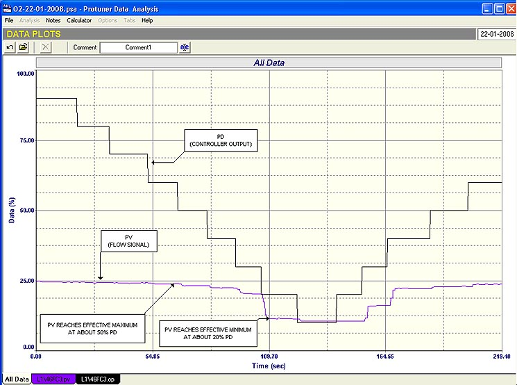
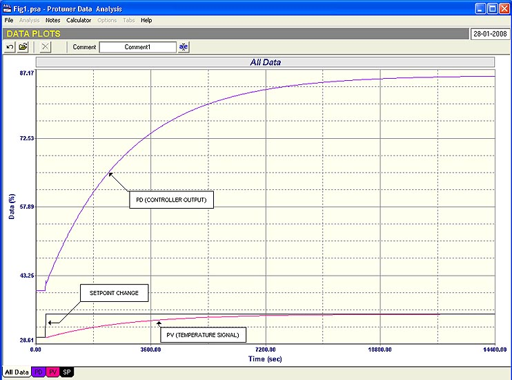
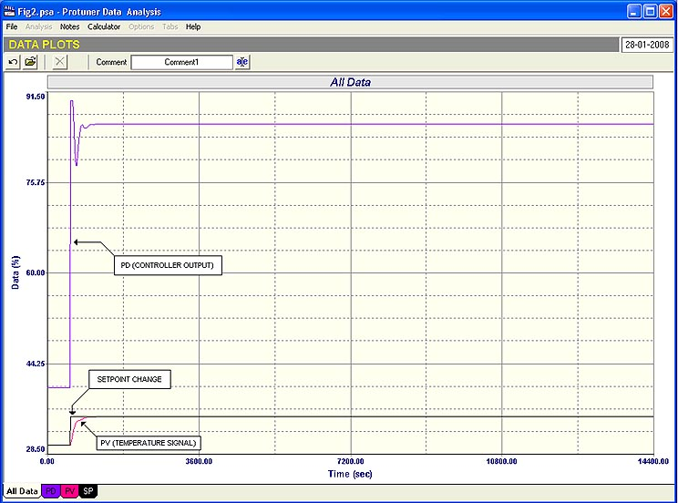

b |
| [Home] [About us] [Contact us] [Training] [Optimisation services] [Protuner] |
| [Loop signatures] [Case histories] |
|
Control Loop Case History 100
I have been writing these Case Histories for many years, and feel I have reached quite a mile-stone by writing this hundredth in the series. All are based on my experiences in optimising regulatory control loops (the “base control layer”) in several hundred plants in quite a few countries around the world. I have also been giving courses on the practical aspects of optimising regulatory control loops since 1990, and several thousand people have attended these courses over that time. Some of these people were senior C&I practitioners, some with over 30 years experience in the field. Well over 99% of these attendees came out of the courses saying they were the best courses on control they have ever attended. Typical remarks were “mind-blowing”; “I wish I had attended this course 20 years ago”; “It’s the first time I have ever really understood feedback control”; “I wish they taught control like this at University” I feel it an appropriate point to try and summarise
what I have found:
Why am I putting all this down?
It is not for the purpose of blowing my own trumpet, but
loop optimisation is my passion.
I used to own a company supplying control systems, and
made far more money from that than I can do on my own teaching
and performing optimisation.
However years ago due to the help of a special friend in However it is very often extremely frustrating with
the general apathy and sometimes negative attitudes of many
companies and personnel. At
times I feel like a crusader trying to push the gospel to the
unbelieving. However
what makes it all worthwhile and very rewarding are the many
successes achieved by both people who have embraced the
teachings and apply them well in their work, and also in the
practical consulting work I do which in most cases result in
huge improvements in process and plant performance. I have an example of this right now.
I have just spent a week in a process plant that has
embraced optimisation.
The control manager is committed to improve plant
performance, and has appointed a team of highly motivated and
very enthusiastic control specialists.
It is a fairly old plant, and we examined some very
interesting loops. The
following two examples are taken from
those. The first example is of an important flow control
which the operators had always been complaining about.
The “as-found” closed loop test (not shown here) was
rather strange. It
appeared that the response to setpoint changes were initially
extremely slow and then moved quickly at times, and then slowed
down again. It was
also apparent that the valve was sticking badly on reversals.
It was quite a puzzling response.  Fig. 1 The open
loop test (see Figure 1) revealed some interesting things.
Basically when the PD (controller output) was below 20%
the PV (flow signal) was at its lowest value of about 11%.
(This could indicate that one or more of the following
problems could exist:
On opening the PD by a further 10% step the flow PV
also moved up by 10%. However
another 10% step in PD only resulted in the PV moving in a tiny
step of about 1.5%. Further
steps in the PD resulted in very little further increase of PV.
It was completely saturated by the time the PD had
reached 50%. The
test also reveals at least 5% hysteresis on the valve.
(This is not marked in the Figure but can be determined
by the offset in the PV on valve reversals taking process gain
into account – see Loop Signature series on hysteresis for
further information). Some serious investigations into the transmitter
and valve setups, and into the process itself, are obviously
needed to find out why the flow only can be moved over a tiny
span of 12% . In the
meantime the control is extremely limited.
If the flow can really only operate over such a small
range then the transmitter spanning needs to be reduced. A temporary measure that was put into place in the
meantime was to put high and low limits on the controller’s
output to prevent it moving into regions where it can no longer
influence the control. This
prevents both mechanical and reset windups, and is very good
practice. There was
however tremendous opposition to this from the operators.
They would not believe that more flow could not be
obtained by opening the valve past 50%.
They had the feeling that even if the flow was limited
then opening the valve further would somehow cause an increase
in flow. It is
sometimes very difficult to overcome perceptions of people not
trained in loop optimisation. The second example in this article is to show how dramatically good tuning can improve performance.
I have often stressed that tuning is the last thing one
should do when optimising. One
must understand the control system, analyse it and correct
problems before tuning, and most of my article have been devoted
to those aspects of optimisation.
However there is of course no doubt that good tuning is
also terribly important for optimum loop performance. This example is a very important and critical
temperature control loop in the plant which has been giving
quite a lot of problems. Although
the process is subject to frequent load changes, the operators
could not run it in automatic as the control was so poor. The
control personnel in the plant had the valve replaced as they
felt that the fault could lie there.
However automatic control was still very bad, and the
loop was kept in manual. When
we examined the loop we found that the existing tuning was
really way out.  Fig. 2 Figure 2 shows the response of the process to a
setpoint change with the original tuning. It took some 4 hours
for the controller to move the temperature up 5%.
 Fig. 3 The tests on this loop took just over an hour to
perform. After
satisfying ourselves that the valve was in fact performing well,
an open loop test was performed to ascertain the dynamics of the
process, and to do the tuning.
Figure 3 shows the result.
The process now takes only 10 minutes to move up the 5%
to the new setpoint. It
is certainly one of the most dramatic improvements in loop
performance purely due to better tuning that I have seen, and I
thought that it was worth while sharing it with our readers and
to finish off the hundredth Case History article.
Michael
Brown is a specialist in control loop optimisation, with many years of
experience in process control instrumentation. His main activities are
consulting, and teaching practical control loop analysis and
optimisation. He gives training courses which can be held in clients'
plants, where students can have the added benefit of practising on live
loops. His work takes him to plants all over South Africa, and also to
other countries. He can be contacted at:
|